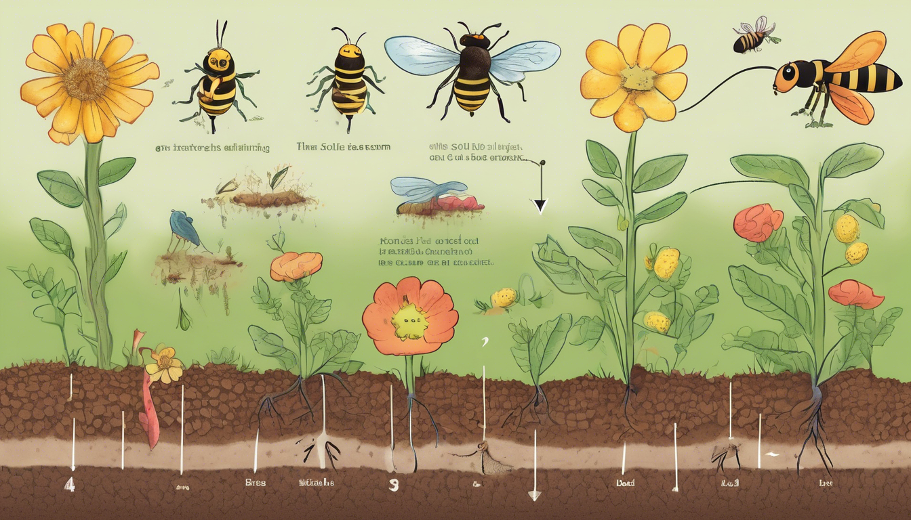
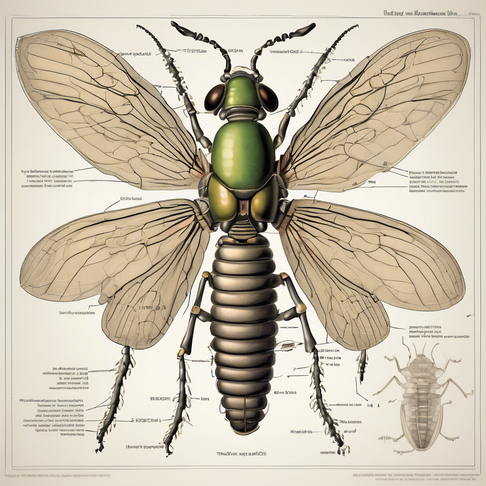
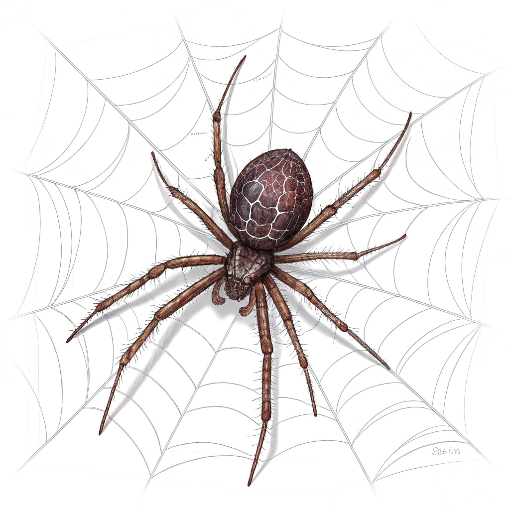
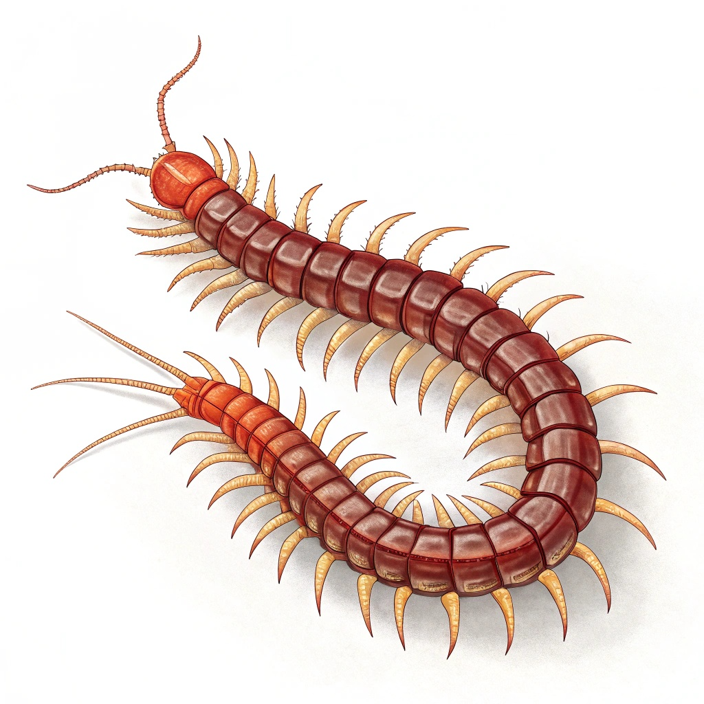
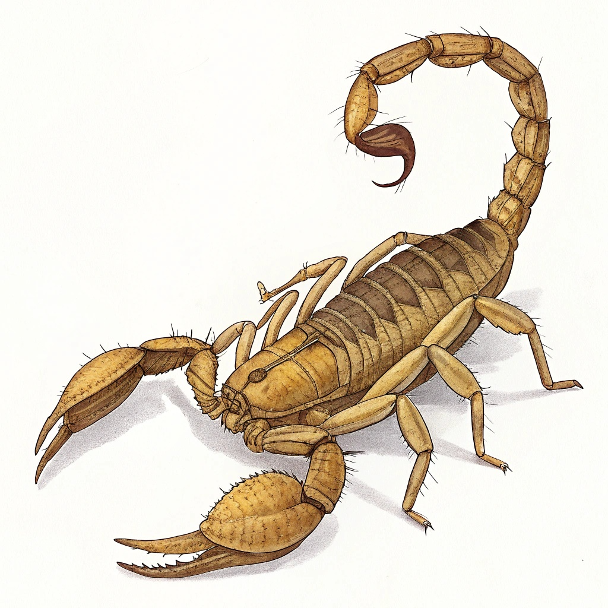
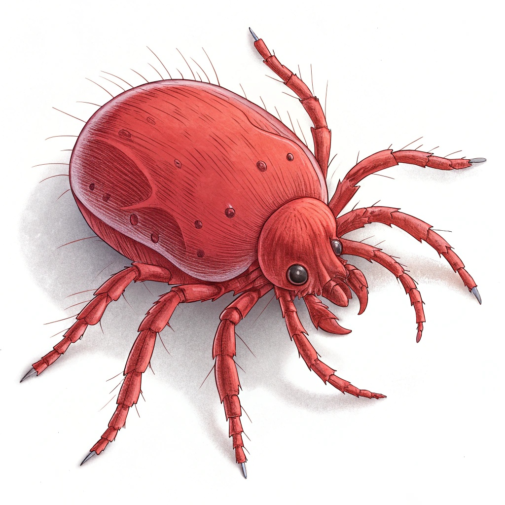
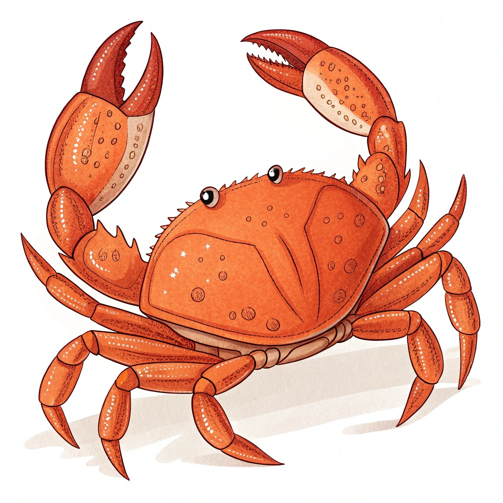
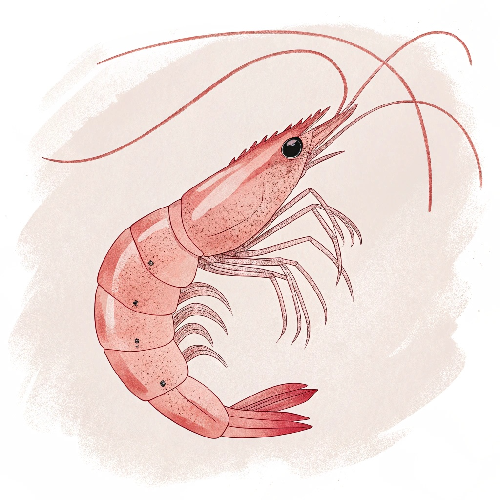
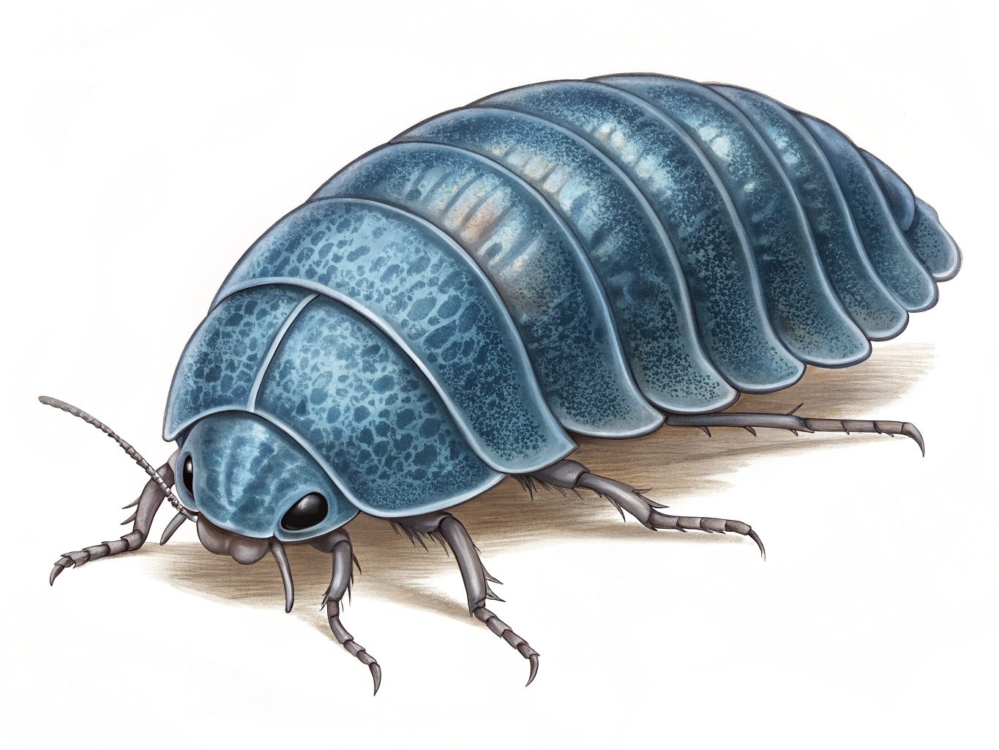
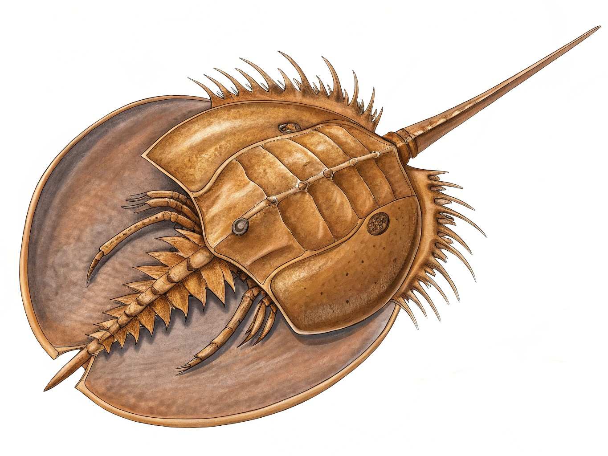

곤충의 특별한 점 🌟

곤충들은 지구상에서 가장 다양한 생물군으로, 각기 다른 환경에서 독특한 방식으로 살아가고 있어요.
곤충은 몸이 머리, 가슴, 배 세 부분으로 나뉘어 있고, 다리가 6개인 동물이에요.
대부분의 곤충은 날개가 2쌍이고, 더듬이가 있어요.
곤충은 우리 생활과 자연에 매우 중요한 역할을 해요. 꽃가루를 옮겨주고, 흙을 비옥하게 만들어주고, 다른 동물들의 먹이가 되기도 해요.

곤충친구들 만나기 🦋


곤충 도감 더 보러가기 🔍
더 많은 곤충 친구들을 만나보세요!
재미있는 활동하기 🎮
곤충이 아닌 동물들
곤충처럼 보이지만 사실은 곤충이 아닌 동물들도 있어요! 이런 동물들은 절지동물이라고 해요. 다리가 많거나, 8개인 동물들이 많답니다.

거미
- 다리가 8개예요
- 몸이 머리가슴과 배 두 부분으로 나뉘어 있어요
- 거미줄을 만들어 집을 짓고 먹이를 잡아요
- 곤충들을 잡아먹어서 자연의 균형을 지켜줘요

지네
- 마디마다 다리가 한 쌍씩 있어요
- 몸이 여러 마디로 이루어져 있어요
- 밤에 활동하는 것을 좋아해요
- 작은 벌레들을 잡아먹어요

전갈
- 8개의 다리와 2개의 집게발이 있어요
- 꼬리 끝에 독침이 있어요
- 주로 밤에 활동해요
- 작은 동물들을 잡아먹어요

진드기
- 아주 작고 8개의 다리가 있어요
- 몸이 한 덩어리로 되어 있어요
- 식물이나 동물에 붙어서 살아요
- 현미경으로 봐야 잘 보일 만큼 작아요

게
- 8개의 다리와 2개의 집게발이 있어요
- 단단한 껍데기로 몸을 보호해요
- 옆으로 걸어다녀요
- 바다나 민물에서 살아요

새우
- 여러 쌍의 다리가 있어요
- 긴 더듬이와 꼬리가 있어요
- 물속에서 헤엄치며 살아요
- 작은 물고기나 플랑크톤을 먹어요

노래기
- 마디마다 다리가 두 쌍씩 있어요
- 몸이 둥글고 길어요
- 죽은 식물을 먹어요
- 위험할 때는 동그랗게 말려요

투구게
- 투구 모양의 단단한 등껍질이 있어요
- 5억년 전부터 거의 변하지 않았어요
- 바다 밑바닥을 기어다녀요
- 작은 해양생물을 먹어요
재미있는 사실
- 거미는 거미줄로 집도 짓고, 먹이도 잡고, 새끼도 보호해요!
- 지네는 다리가 15쌍에서 191쌍까지 있을 수 있어요!
- 전갈은 어두운 곳에서도 잘 볼 수 있는 특별한 눈을 가지고 있어요!
- 진드기는 너무 작아서 맨눈으로는 잘 보이지 않지만, 지구 어디에나 살고 있어요!
- 게는 옆으로 걸으면서도 먹이를 잘 찾아요!
- 새우는 꼬리로 빠르게 헤엄칠 수 있어요!
- 노래기는 천적을 만나면 동그랗게 말려서 보호해요!
- 투구게의 파란 피는 의약품을 만드는 데 사용돼요!
곤충과 다른 점
- 곤충은 다리가 6개지만, 이 동물들은 8개 이상이에요
- 곤충은 몸이 머리, 가슴, 배로 나뉘지만, 이 동물들은 다르게 생겼어요
- 곤충은 더듬이가 있지만, 이 동물들은 없거나 다른 모양이에요
- 곤충은 대부분 날개가 있지만, 이 동물들은 날개가 없어요
- 곤충은 주로 땅에서 살지만, 이 동물들은 물속이나 다양한 환경에서 살아요